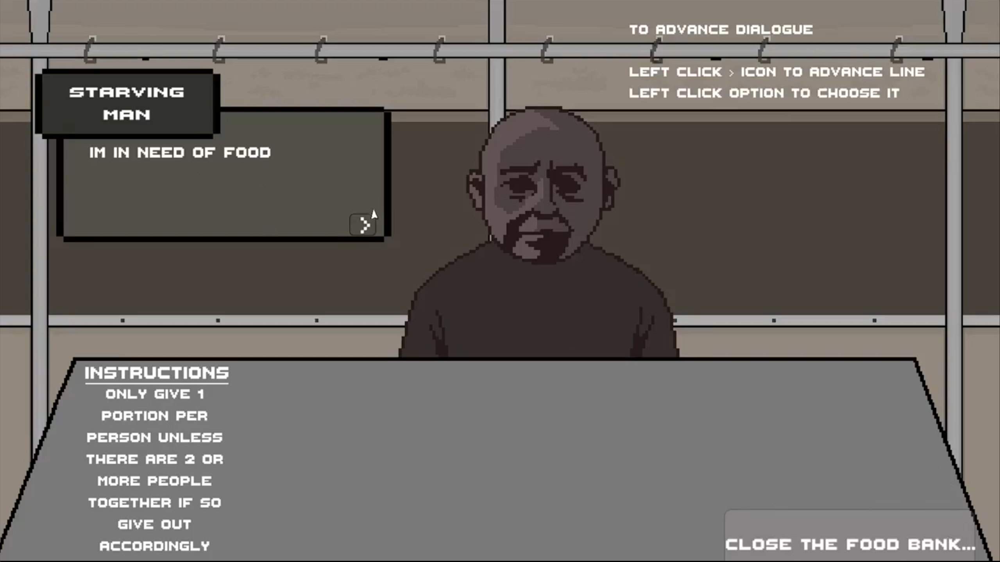

In Need of Food was created around a brief to make a game based on a social issue. I chose food waste and its potential future consequences, imagining a London in 2056 suffering a severe food crisis where people can no longer easily access nutrition and must queue daily just to survive meal to meal.
The game puts you in charge of running a food bank in this world. As a visual novel, players make choices about whether to give food to the people in front of them but crucially, there are no gameplay consequences for your decisions. The design intent was to challenge the player's moral compass, not punish or reward it.
I wrote the characters and their stories, working closely with character artist Fahim whose illustrations brought them to life. The collaboration between writing and art created characters that felt believable and humanised the crisis the game depicts. At the end, we thank the player and direct them to real-world charities fighting food waste and poverty.
Team Credits:
Game Designer - Humza Mustafa
Environent Artist - Daniel Hernandez
Character Artist - Fahim Ali
Screenshots
Behind the Scenes
Food waste is an issue I feel personally connected to. Having experienced food poverty, seeing the volume of waste produced by restaurants and supermarkets was deeply upsetting. I wanted the game to show players that wasting food is a choice and that there will always be someone whose day could be changed by something as simple as a slice of bread.
The decision to remove consequences from the player's choices started out of time constraints, but ended up serving the game far more powerfully than any punishment system could. Real life has no right or wrong answer our moral compass compels us to act, and the game reflects that. Rather than rewarding or penalising decisions, it asks you to sit with them and question what you can actually do to make things better for others.
Each character was designed to represent a different facet of society: a man in poverty, a struggling multi-generational family, and an apathetic business entrepreneur. The intent was to show that in a food crisis, no one is exempt suffering cuts across class and status. By placing the player face-to-face with a range of people, the game nudges them to reconsider how they consume food and how they might help those around them.
The shadows across each character's face were a deliberate choice they convey deep emotion without a single expression, reflecting the weight of a crisis that is felt but rarely spoken about. At the same time, each facial feature remains visible and individual, a reminder that these are real people who, in another world, would never have faced this. We also made a conscious decision not to visually differentiate characters by ethnicity: inside the food bank, no one is overlooked or discriminated against, and we wanted players to feel that subconsciously every person in that queue has an equal right to be fed.
Ending with real charities was intentional I wanted the player to leave with somewhere to go, not just something to feel. By placing them in a grim imagined future, the hope was to open their eyes to a crisis already unfolding and show that the tools to combat it exist right now.
© Copyright Humza Mustafa 2026
{kind=link}
{kind=link}
{kind=link}
{kind=link}
{kind=link}
{kind=link}
{kind=link}
{kind=link}
{kind=link}